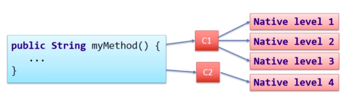

Тесты:
Разное:
Heroku
Микросервисы
JAVA 21
JAVA - объектно ориентированный, компилирующийся(javac), интерпретирующийся(JVM, JIT), мультиплатформенный язык программирования.
Just-in-time компилятор - кеширует код, который выполняется часто. Но это дополнительная память.
Есть 4 уровня JIT компиляции байт-кода в машинный код. Чем выше уровень компиляции, тем он сложнее, но и одновременно выполнение такого участка будет быстрее, чем участка с меньшим уровнем. JIT — компилятор самостоятельно решает, какой уровень компиляции задать для каждого фрагмента программы на основе того, как часто выполняется этот фрагмент.
Под капотом JVM использует 2 JIT-компилятора — C1 и C2. C1 компилятор так же называется клиентским компилятором и способен скомпилировать код только до 3-его уровня. За 4-ый, самый сложны и быстрый уровень компиляции отвечает компилятор C2.
Из вышесказанного можно сделать вывод о том, что для простых, клиентских приложений, выгоднее использовать компилятор C1, так как в этом случае нам важно как быстро стартует приложение. Серверные, долгоживущие приложения могут стартовать большее количество времени, однако в дальнейшем должны работать и выполнять свою функцию быстро — тут нам подойдет компилятор C2.
При запуске Java — программы на x32 версии JVM мы в ручную можем указать, какой режим мы хотим использовать, при помощи флагов -client и -server. При указании флага -client JVM не будет производить сложные оптимизации с байт-кодом, что ускорит время старта приложения и уменьшит количество потребляемой памяти. При указании флага -server приложение будет стартовать большее количество времени из-за сложных оптимизаций байт-кода и будет использовать больше памяти для хранения машинного кода, однако в дальнейшем работать такая программа будет быстрее.
В x64 версии JVM флаг -client игнорируется и по умолчанию используется серверная конфигурация приложения.
Потоки которые не требуют маппинга на реальные потоки процессора.
Реализовать методы класса LinkedList
class Node {
Integer value;
Node next;
}
class LinkedList {
private Node head;
public void remove(Integer value) {
}
public void add(Integer prev, Integer next, Integer value) {
}
}